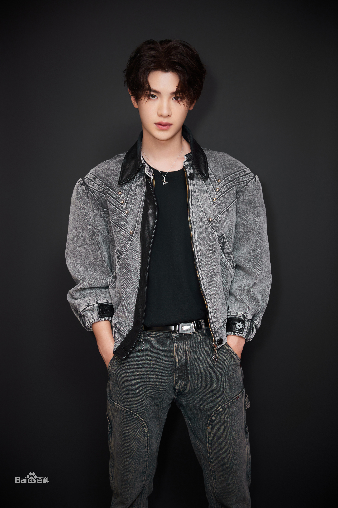

黄明昊（Justin），2002年2月19日出生于浙江省温州市瑞安市，中国内地男歌手。

黄明昊出生于浙江温州瑞安，由于父母常年在国外工作，黄明昊经常被拜托给在杭州的亲戚照顾，于是黄明昊的学业均在杭州完成的——小学就读于杭州市大关苑第一小学，初中就读于杭州市锦绣中学。从小学一年级开始，黄明昊就跟爷爷一起游泳，游到了初一，游了七年，在浙江省取得过优异成绩
[13-14]。黄明昊也经常参加学校元旦、六一的文艺汇演；五年级时，学校组建健美操队；黄明昊参加并练习一年，六年级参加比赛，首战就夺得杭州市小学生健美操比赛两个项目的金奖。之后，在锦绣中学读完初一，接着转学出国 [15] 。
2017年4月，参加韩国选秀节目《Produce 101 第二季》，表演了《姐姐真漂亮》《Shape of You》等舞台，并在《姐姐真漂亮》舞台中担任center位置。 [1]
2018年1月，参加爱奇艺偶像竞演养成类真人秀《偶像练习生》，在4月6日的总决赛中以14574594票排名第四，成为九人男团NINE PERCENT成员正式出道 [2] 。6月21日，随NEXT发行音乐专辑《THE FIRST》
[16]
。6月22日，随NINE PERCENT参加浙江卫视《奔跑吧第二季》 [17] 。7月27日，担任芒果TV实景科幻实验节目《勇敢的世界》常驻嘉宾 [18] 。9月22日，担任爱奇艺互动实境经营秀《奇妙的食光》常驻嘉宾 [19]
。11月4日，担任优酷实境经营真人秀《完美的餐厅》常驻嘉宾 [3] 。11月5日，发行首支个人作词作曲原创单曲《Hard Road》 [4] 。11月16日始，连续担任芒果TV明星推理真人秀《明星大侦探第四季》三期嘉宾 [20]
。11月20日，随NINE PERCENT发行组合首张音乐专辑《TO THE NINES》 [21] 。12月7日，随NEXT发行音乐专辑《NEXT TO YOU》，专辑收录黄明昊第二首作词作曲个人原创歌曲《After Leaving》
[5] 。12月30日，随NEXT参加《浙江卫视领跑2019演唱会》献上跨年首秀 [22] 。2019年1月29日，参加《2019湖南卫视春节联欢晚会》，演唱RAP作词原创歌曲《祝你新年快乐》 [23]
。2月20日，发行与袁娅维等合作作词作曲的原创单曲《NO
WHY》。3月30日，担任芒果TV实景解密体验秀《密室大逃脱第一季》常驻嘉宾 [6] 。4月23日，发行第三首参与作词作曲个人原创单曲《Liar》 [7]
。5月15日，发行与日本说唱歌手KOHH合作作词的原创单曲《MARIA》。6月18日，发行Stride甜酷系列品牌主题曲的第一波单曲《1/2 SWEET》。7月12日，担任腾讯体育00后青春竞技真人秀《篮板青春》常驻嘉宾 [24]
。7月24日，发行Stride甜酷系列品牌主题曲的第二波单曲《1/2 COOL》。8月23日，担任北京卫视文化体验节目《遇见天坛》常驻嘉宾 [8] 。8月23日，发行参与作词个人原创单曲《Pick Up The Phone》 [25]
。9月26日，随NINE PERCENT发行音乐专辑《限定的记忆》，专辑收录其作词个人原创歌曲《挣脱》。10月17日，入选2019福布斯中国30位30岁以下精英榜 [26] 。11月8日，随乐华七子NEXT推出第三张组合专辑《NEXT
BEGINS》 [27] 。11月26日，发行参与作词作曲个人原创单曲《请拨打我的电话please》。12月20日，参加江苏卫视、优酷视频星素实战经营类综艺 《我想开个店》 [28]
。12月31日，随乐华NEXT参加《浙江卫视2020跨年晚会》 [29] 。
2020年1月4日，担任北京卫视长城文化体验类节目《了不起的长城》常驻嘉宾 [9] 。2月29日，发行与满舒克合作作词作曲原创单曲《眠冬》 [30] 。3月7日，担任腾讯视频真人角色扮演游戏《我加》常驻嘉宾 [31]
。5月3日，参加湖南卫视青春励志城市接力唱演秀《青春万岁——五四接力大直播》 [32] 。5月23日，担任优酷独居生活观察类真人秀《看我的生活》常驻嘉宾 [33-34]；6月14日，作为队长出战QQ名人赛《王者荣耀》王牌赛 [87]
；6月30日，担任芒果TV实景解密体验秀《密室大逃脱第二季》常驻嘉宾 [35] 。7月4日，担任爱奇艺冲浪生活体验清凉综艺《夏日冲浪店》常驻嘉宾 [36] 。7月31日，担任湖南卫视代际互动观察类游戏综艺《元气满满的哥哥》常驻嘉宾
[10]
。8月3日，发行首张个人音乐专辑《18》，收录了包括《Angel Love》、《PSYCHO》等在内的10首歌曲 [11] 。9月26日，成为《快乐大本营》12期常驻嘉宾 [12] 。10月24日，举办了线上首唱会 [37]
。11月10日，随乐华NEXT在天猫双11狂欢夜上表演《竹影琴声》 [38] 。12月10日，在第十七届MAHB时尚先生盛典